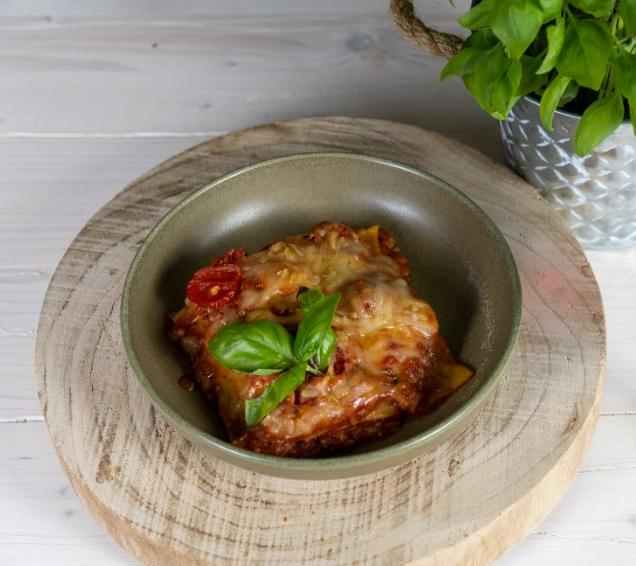

vegane Lasagne

Beschreibung
Vegane Lasagne aus Tofu und veganem Reibekäse
Zutaten
- 200g Natur Tofu
- 1 Zwiebel
- 2 Knoblauchzehen
- 3 EL Tomatenmark
- 200 ml Rotwein
- 2 Dosen stückige Tomaten
- 300 ml passierte Tomaten
- Salz und Pfeffer
- 2 EL Oregano
- 1 EL Agavendicksaft
- 1/2 TL Paprikapulver
- 1 EL Thymian
- 1 kleine Zucchini
- 2 Karotten
- 10 Lasagne
- veganer Reibekäse
- frischer Basilikum
Schritte
- Zwiebel fein würfeln, Tofu mit den Händen zerkrümeln und beides in 2 EL Olivenöl für ca. 2 Minuten anbraten. Anschließend Knoblauch fein würfeln und mit unterheben.
Nach ca. ½ Minuten das Tomatenmark dazugeben und für ca. 2 Minuten mit anrösten lassen. Mit dem Rotwein ablöschen und kurz einreduzieren lassen.
Stückige sowie passierte Tomaten, Salz, Pfeffer, Agavendicksaft, Paprikapulver und Oregano unterrühren und aufkochen lassen.
Abschmecken mit etwas getrocknetem Thymian und ggf. etwas mehr Pfeffer und Salz.
- Zucchini fein würfeln, die Möhren in feine Scheiben schneiden. Die Gemüsewürfel in einer zweiten Pfanne in Olivenöl kurz und kräftig anbraten.
Anschließend unter die köchelnde Soße geben.
- Den Boden der Auflaufform mit Soße bedecken, darauf kommt die erste Schicht Lasagneplatten (diese ggf. etwas zurechtbrechen). Darauf wieder eine Schicht der Soße.
Fortfahren, bis ca. 4 Schichten entstanden sind. Die letzte Schicht besteht aus der Soße, abgedeckt mit dem veganen Reibekäse.
Die letzte Schicht kann nach Bedarf mit einigen Tomaten oder Zucchinischeiben belegt werden, bevor die Lasagne bei 220 °C Ober- und Unterhitze für ca. 45 Minuten in den Ofen wandert.
- Lasagne auf einem Teller mit einigen frischen Basilikumblättern anrichten. Dazu passt ein Glas Rotwein. Guten Appetit!